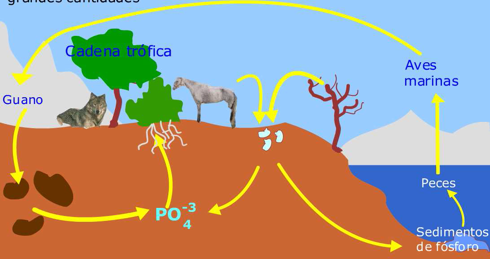

Ciclo del fósforo
La proporción de fósforo en la materia viva es bastante pequeña, pero el papel que desempeña es vital. Es componente de los ácidos nucleicos como el ADN. Se encuentra presente en los huesos y piezas dentarias. En la fotosíntesis y en la respiración celular, muchas sustancias intermedias están combinadas con el fósforo, tal el caso del trifosfato de adenosina (ATP) que almacena energía.
El fósforo es el principal factor limitante del crecimiento para los ecosistemas, porque su ciclo está muy relacionado con su movimiento entre los continentes y los océanos. 6 La mayor reserva de fósforo está en la corteza terrestre y en los depósitos de rocas marinas. El fósforo se encuentra en forma de fosfatos (sales) de calcio, hierro, aluminio y manganeso. La lluvia disuelve los fosfatos presentes en los suelos y los pone a disposición de los vegetales. El lavado de los suelos y el arrastre de los organismos vivos fertilizan los océanos y mares.
Parte del fósforo incorporado a los peces es extraído por aves acuáticas que lo llevan a la tierra por medio de la defecación (guano). Otra parte del fósforo contenido en organismos acuáticos va al fondo de las rocas marinas cuando éstos mueren. Las bacterias fosfatizantes que están en los suelos transforman el fósforo presente en cadáveres y excrementos en fosfatos disueltos, que son absorbidos por las raíces de los vegetales.

ATRAS